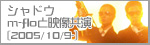

-
ソニックギターの第一次出荷分の組み込みを行なう日に、東京郊外にあるESPの工場にお邪魔しまして写真を撮ったり、認定書にサイン入れをしたりしてきましたので、その様子をレポートしたいと思います。
-
Kinectの販売に貢献した功績を称え、日本マイクロソフト株式会社様から表彰のトロフィーを頂きました
-
幕張メッセで開催された「TOKYO GAME SHOW 2011」で「ソニック20周年スペシャルライブ」が行われました。
その時の模様をレポートします！
-
「ソニック20周年」サウンドコラボレーション！東京ジョイポリス視察レポート！
-
ソニックベストCD「トゥルー・カラーズ」の発売記念として、ソニック関連のサウンドを手掛けるクリエイターの座談会を実施！
-
セガが誇る、カリスマサウンドクリエイターの瀬上 純と光吉 猛修。
ソニックの誕生日記念に、夢のジョイントセッションついに実現！
-
2008年1月13（日）
「次世代ワールドホビーフェア’08 Winter」が開催されました。
今回は京セラドーム大阪で行なわれた模様をレポートします！
-
2007年10月21日（日）、総合学園ヒューマンアカデミー東京校にてソニックシリーズの新作ゲームプロモーションイベントが開催されました。
-
2007年1月14（日）・20（土）・21（日）・28（日）/2月4（日）、
「第25回 次世代ワールドホビーフェア」が開催されました。
今回は幕張メッセで行なわれた東京大会での模様をレポートします！
-
2006年12月3日（日）「ソニック・ザ・ヘッジホッグ」15周年記念イベントが
エンターブレインのイベントスペース「WinPa」にて行なわれました！
その時の模様をレポートします！
-
「ソニック チャンネル」リニューアル記念、ソニック15周年イベントとして開催した
「ソニック」シリーズのキャラクター人気投票、ついに結果発表です！
-
今年もアメリカのロサンゼルスで、
世界最大のゲームショウである「Ｅ3」が、
2006年5月10日～12日の期間、盛大に開催されました！
そのレポートをお届けします！ぜひご覧ください。
-

今回の「次世代ワールドホビーフェア」には『ソニックライダーズ』をはじめ
3つのソニックタイトルがプレイアブル出展されます！
また、ソニックグッズ プレゼントも盛りだくさんです！キャンペーンもお見逃しなく！
-
2005年12月15日（木）東京・新木場STUDIO COASTにて「ARTIMAGE
NIGHT 2005」が開催されました！
「シャドウ」がイベント前に応援に駆けつけた様子をお伝えいたします！
-
2005年11月19日（土）六本木ヴェルファーレで開催されたサイバートランスのメインステージに
ソニックが登場！ そのときの模様をレポートいたします！
メインステージでのソニックのムービーを追加しました！(2005.12.2up)
-
2005年11月4日（金）後楽園ホールで行なわれた「PANCRASE
2005 SPIRAL TOUR」で、
シャドウがプレゼンターとして登場しました。
そのときの模様をレポートいたします！
-
ソニックの生みの親でもある中 裕司がドイツ出張の際、「ハリネズミ保護センター」を訪れました。
その時の模様をお伝えいたします。
-
シャドウとm-floのコラボレーション
「TRIPOD BABY（SHADOW THE HEDGEHOG MIX）」が
11月2日より iTunes Music Storeにて発売開始！
-
m-floに続き、格闘技団体「パンクラス」とのコラボレーションが決定。
今回は、パンクラスの鈴木みのる選手との公開スパーリング（？）をレポート！
2005年11月4日（金）後楽園ホール、2005年12月4日（日）ディファ有明の大会は見逃せないぞ！
-

「シャドウ」と「m-flo」が映像共演することが決定。
2005年10月9日、都内のスタジオで各種撮影が行われました。そのレポートをお届けします！
「TRIPOD
BABY（SHADOW THE HEDGEHOG MIX）」が11月2日よりiTMSで配信開始！(2005.11.2up)
-
マリオの生誕20周年を祝って、各界からの著名人、クリエーターがマリオＴシャツをデザインしました。
このイベントに、なんと我らがソニックも参加しています！
ソニックとマリオの夢のコラボレーションをお見逃しなく！
-
6月25～26日に開催された『次世代 ワールドホビーフェア』。
会場に行けなかった方のために、ソニックコーナーの様子をレポート！
-
今回の『次世代 ワールドホビーフェア』にはソニックシリーズ新タイトルが
なんと3つもプレイアブル出展されます！
またソニックグッズ
プレゼントキャンペーンも開催！ ※キャンペーンは終了しました
-
世界最大のゲームショウであるE3が、5月18日～20日、開催されました！
そのレポートをお届けします！ぜひご覧ください。
-